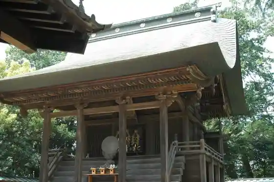
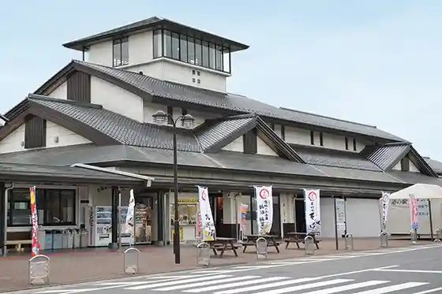
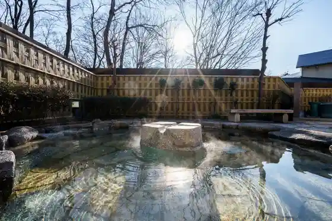
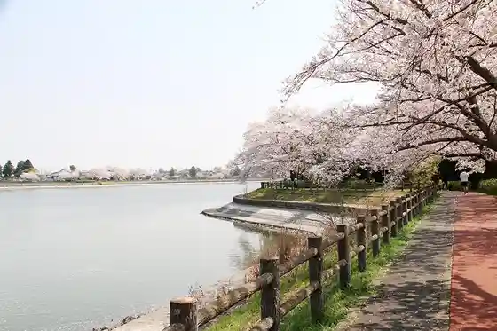

Homikku Fureai Park
Shimotsuma, Ibaraki · 0296-45-0200 · Official / source link
Taiho Hachiman Shrine
Shimotsuma, Ibaraki · 0296-44-3756 · Official / source link

Roadside Station Shimotsuma
Shimotsuma, Ibaraki · 0296-30-5294 · Official / source link

Shimotsuma Onsen Biasu Park Shimotsuma
Shimotsuma, Ibaraki · 0296-30-5121 · Official / source link

Suna Numa Koiki Park
Shimotsuma, Ibaraki · 0296-43-2111 · Official / source link

WaiWai Domu Shimotsuma
Shimotsuma, Ibaraki · Official / source link
San Ho no Eki San SUN Sanuma
Shimotsuma, Ibaraki · 0296-45-6262 · Official / source link
Yasuragi no Sato Shimotsuma Nosambutsu Chiyokawa Chokubai Tokoro
Shimotsuma, Ibaraki · 0296-30-7660 · Official / source link
Kokaigawa
Shimotsuma, Ibaraki · Official / source link
Me Kyabetsu Suna Numa Mise
Shimotsuma, Ibaraki · 0296-44-7272 · Official / source link
Roadside Station Shimotsuma Soba Uchi Meijin Tei
Shimotsuma, Ibaraki · 0296-30-5294 · Official / source link
Kojima Soan Ato
Shimotsuma, Ibaraki · Official / source link
Shimotsuma Furusato Museum
Shimotsuma, Ibaraki · 0296-44-7111 · Official / source link